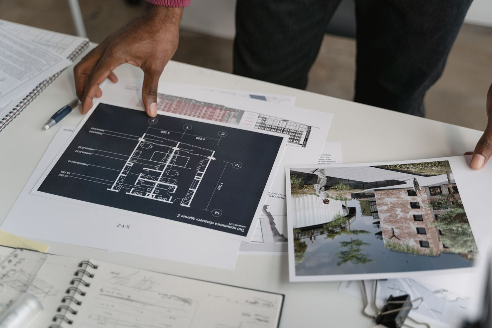

Quick answer: To choose a builder in Sydney, verify the contractor licence on the NSW Fair Trading public register, confirm HBCF insurance eligibility for contracts over $20,000, request references from three comparable completed projects, obtain at least three itemised quotes, and read the variations clause before signing anything. The licence check takes two minutes. Skipping it has cost Sydney homeowners significantly more than that.
You’ve done the research. You have a shortlist of three names from the neighbourhood Facebook group and a strong feeling about one of them. The strong feeling is doing a lot of heavy lifting here.
[Right. Straight face now.] Choosing a builder in Sydney is one of the more consequential decisions attached to a building project — and not because the paperwork is complicated. It is because the right builder makes the process run roughly as described, and the wrong one turns the next 18 months into an education in contract law. Here is what to check before you commit.
- What “licensed builder” actually means in NSW
- How to check a builder’s licence on the Fair Trading register
- HBCF insurance — what it covers and when you need it
- How to assess portfolio and references properly
- Getting quotes: what you’re actually comparing
- The building contract: what to read before signing
- The variations clause — where project risk hides
- Phoenix builders and company history checks
- Industry memberships: HIA and MBA
- When NOT to hire this builder
- Six questions to ask before you commit
- FAQ

Photo via Pexels
What “Licensed Builder” Actually Means in NSW
In NSW, anyone who contracts to carry out residential building work over $5,000 must hold a current contractor licence issued by NSW Fair Trading. The licence is not a simple registration — it requires demonstrated trade qualifications or experience, a knowledge assessment, and proof of insurance eligibility.
The licence is issued to the contracting entity. If a builder operates as a company — which most do — the licence must be in the company’s name, not just the director’s personal name. This distinction matters: if you sign a contract with an unlicensed entity, your statutory protections under the Home Building Act 1989 (NSW) are significantly weakened.
The licence class also matters. A Contractor Licence for Residential Building Work covers construction of a dwelling. A licence for specialist work — plumbing, electrical, waterproofing — covers only that trade. Confirm the builder you are dealing with holds the correct licence class for the full scope of your project.
Some builders operate under a supervisor licence rather than a contractor licence. A supervisor licence allows an individual to supervise building work, but the contracting entity — the company that signs your contract and takes your money — must hold the contractor licence. Do not accept “my supervisor holds a licence” as a substitute.
How to Check a Builder’s Licence on the Fair Trading Register
The NSW Fair Trading public register is free, takes under two minutes, and contains every licensed contractor in the state. Go to the NSW Fair Trading licence check and search by name, licence number, or ABN.
When you find the builder’s record, confirm:
- The licence status is Current — not suspended, expired, or cancelled
- The licence class covers residential building work at your project value
- The registered name matches the entity that will sign your contract
- There are no conditions or restrictions noted on the licence
- The licence has not been subject to disciplinary proceedings
A builder who is reluctant to provide their licence number before a meeting has already told you something. The number is public record. There is no legitimate reason to withhold it.
This check also applies if you are choosing a custom home builder for a higher-specification project — the same licensing requirements apply regardless of project value or complexity.
HBCF Insurance — What It Covers and When You Need It
The Home Building Compensation Fund (HBCF) is NSW’s mandatory insurance scheme for residential building work. For any contract over $20,000, the builder must hold HBCF insurance eligibility and obtain a certificate of insurance before taking a deposit or starting work.
The insurance protects you — the homeowner — in three specific scenarios: the builder dies, disappears (ceases to carry on business), or becomes insolvent before completing the work, or before the statutory warranty period expires. It does not cover defects arising while the builder is still trading and solvent. It is last-resort protection, not an ongoing defects policy.
The HBCF coverage limits in NSW are currently $340,000 per contract for incomplete work, and up to $340,000 for defects claims. On a $1.5M build, the maximum HBCF payout is $340,000 — well short of full exposure. This is one reason that choosing a financially stable builder, not just a licensed one, matters.
Before signing any contract, ask the builder to provide their HBCF certificate of insurance for your specific project. The certificate is issued per project and lists your property address, the contract value, and the policy period. If a builder cannot produce this before work starts, work should not start.
How to Assess Portfolio and References Properly
A builder’s portfolio is marketing material. References are evidence. Treat them differently.
When reviewing a portfolio, note the size and specification of completed projects relative to yours. A builder who has delivered strong results on 150m² single-storey homes may not have the subcontractor relationships or project management systems required for a 350m² double-storey custom build. The visual quality of finishes matters less than the structural scope match.
For references, ask for three completed projects from the last 24 months that are comparable to yours in size and budget. A builder who has been operating for several years and cannot produce three recent comparable references is telling you something about their volume or their relationships with past clients.
When you speak to references, ask specific questions:
- Did the project finish within the contracted programme?
- Was the final cost within 10% of the original contract price?
- How were defects identified at handover addressed, and how quickly?
- Who was your site supervisor, and how often did you interact with them?
- Would you use this builder again?
Drive past at least one completed project. Knock on the door if you can. Homeowners who are genuinely happy with their builder will talk to you. The ones who are not will also talk to you, which is equally useful.
You can also browse completed projects on a builder’s website to understand the range of work they typically deliver — but always follow up with direct reference conversations before you commit.

Photo via Pexels
Getting Quotes: What You’re Actually Comparing
Get at least three quotes for any significant residential build. The purpose is not to find the lowest number — it is to understand what each builder is pricing and how they price it.
Ask each builder to quote from the same set of documents: plans, specifications, and a clear scope of work. If one builder is quoting from detailed architectural drawings and another is pricing from a rough brief, the numbers are not comparable. The lower quote may simply reflect less work being included.
When comparing quotes, examine:
- Inclusions and exclusions — what is explicitly listed, and what is not mentioned
- Provisional sums and prime cost items — costs that are estimated rather than fixed, and how many there are
- Preliminaries — the builder’s fixed overhead costs, which vary significantly
- Contingency allowances — whether the quote includes a buffer for unforeseen conditions
A quote with many provisional sums and prime cost items is a quote that will change. That is not necessarily dishonest — some items genuinely cannot be fixed priced at tender stage — but it means the contract price is not the final price. Factor this in when comparing.
For new home builds in Sydney, our guide to building a new home covers how to structure a brief that allows builders to give you a genuinely comparable quote from the outset.
The Building Contract: What to Read Before Signing
Most residential builders in NSW use standard contract forms from either the HIA or MBA. Both forms have been developed with legal input and are reasonably balanced — but “standard” does not mean you should not read them.
Before signing, confirm the contract includes:
- The builder’s full name, ABN, and licence number
- A fixed contract price, or a clear mechanism for price adjustment
- Detailed plans and specifications as attached documents
- A progress payment schedule tied to construction stages
- A start date and a practical completion date, with a liquidated damages clause
- A defects liability period of at least 13 weeks after practical completion
- A clear dispute resolution process
Pay particular attention to the payment schedule. Progress payments should be tied to construction milestones — slab, frame, lock-up, fixing, completion — not to calendar dates. Paying ahead of construction progress gives the builder your money before they have earned it and weakens your negotiating position if problems arise.
The deposit should not exceed 10% of the contract price for contracts over $20,000. This is a statutory requirement in NSW, not a negotiating position. The NSW Planning Portal also publishes a step-by-step guide to selecting the right tradesperson or builder, which covers your rights under the contract in plain language.
The Variations Clause — Where Project Risk Hides
This section is the one most guides skip, so we will spend a moment on it.
A variations clause governs what happens when the scope of work changes — whether at your request or because of unforeseen site conditions. In a well-drafted clause, every variation is documented in writing, priced before work proceeds, and signed by both parties. In a poorly drafted clause, the builder can carry out work and present you with the cost after the fact.
Variations are also where builder margin lives. A fixed-price contract often carries tight margins on the base scope; the variations process — where rates are set by the builder and are less visible to you — is where profitability is recovered. This is not automatically unreasonable. But it is something to understand before you sign.
Before committing to any builder, ask to see the variations clause in the proposed contract. If variations are reconciled at completion rather than approved in advance, negotiate to change this. A builder who resists this clause revision deserves a direct question about why.

Photo via Pexels
Phoenix Builders and Company History Checks
A phoenix company is one that closes under one name and reopens under another — typically after leaving creditors, subcontractors, or clients with unpaid claims. It is a genuine risk in the residential building sector, where company structures are relatively simple and directorship is easy to shift.
Before signing a contract, run a basic company search through ASIC’s free register. Note the company’s date of incorporation and the director history. A company that has been trading under the same ABN for seven or more years under consistent directorship is a materially different risk profile from one incorporated 18 months ago whose director previously ran two other building companies that were wound up.
You are not looking for a perfect record — long-established builders sometimes restructure for legitimate reasons. You are looking for a pattern: repeated liquidations, ABN changes every few years, or a director whose name appears across multiple dissolved building entities. This research takes 20 minutes and is publicly available. Few homeowners do it before signing a $1.5M contract.
For a deeper look at what separates reliable Sydney builders from the rest, see our overview of custom home builders on the North Shore, which covers similar due diligence in a specific Sydney market.
Industry Memberships: HIA and MBA
The Housing Industry Association (HIA) and Master Builders Australia (MBA) are the two peak bodies for residential construction in Australia. Both offer membership to licensed builders who meet professional standards and engage with industry training.
Membership with one or both is a useful indicator. It does not replace licence verification or HBCF confirmation — those are legal requirements. But a builder who actively maintains industry membership is generally one who takes professional standing seriously, has access to current contract templates and legal guidance, and has agreed to a code of conduct.
You can also check whether your builder has received industry awards. HIA and MBA both run annual awards programs recognising residential building quality. An award-winning project in a comparable category to yours is a meaningful data point — not a guarantee, but a useful one.
When NOT to Hire This Builder
Walk away if the builder cannot produce a current licence number immediately. This is not obscure information — it is the first thing a legitimate builder should be able to give you.
Walk away if the proposed contract requires you to pay more than 10% as a deposit, or requests progress payments in advance of the construction milestones they are tied to. Both are red flags and both contravene NSW statutory requirements.
Walk away if references are unavailable, vague, or if the builder redirects you to online reviews rather than direct client contact. Google reviews are useful. Speaking to a homeowner who went through the same process you are about to go through is different in kind.
Walk away if the quote is significantly lower than the other two you received — and the builder cannot explain specifically what is excluded or where the efficiency comes from. In residential construction, the low tender usually means something: thinner margins that create pressure later, more provisional sums that will inflate, or less experienced subcontractors. Rarely does it mean the builder found efficiencies the others missed.
Walk away if you feel pressured to sign quickly. A builder who creates urgency at the contract stage — “we have another project starting, so we need an answer this week” — is either managing their schedule honestly, which is fine, or creating false urgency, which is not. Either way, a decision of this size should not be made under time pressure.
Six Questions to Ask Before You Commit
Do this homework before the first phone call, not after you have had three good meetings and are emotionally invested in the renders.
- Can I have your contractor licence number? Verify it on the NSW Fair Trading register before the meeting ends. Current status, correct class, correct entity name.
- Are you currently eligible for HBCF cover for a project of this value? Ask for written confirmation. The builder should be able to produce evidence of HBCF eligibility before you sign.
- Who will be my dedicated site supervisor, and how many other projects will they be managing simultaneously? Supervision quality is often the single biggest determinant of on-site outcomes. One supervisor across six projects delivers meaningfully less oversight than one across two.
- Can I speak directly with three clients from comparable projects completed in the last two years? If the answer is hesitant or redirected, note it.
- What is your current programme capacity, and what is the earliest realistic start date? A builder with no forward programme should prompt the same question as a surgeon with no waiting list. Not a dealbreaker, but worth understanding.
- How do you handle variations — and can I see the variations clause in your proposed contract? Ask before you are emotionally attached to the relationship. The answer tells you a great deal about how the builder manages their own business. For more on what to expect from the full contract and process, see our guide to building a new home in Sydney.
Six questions. Not an unreasonable threshold for a commitment of this size. If a builder finds them intrusive, that is, in its own way, an answer.
FAQ
How do I check if a builder is licensed in NSW?
Go to the NSW Fair Trading public register and search by the builder’s name, licence number, or ABN. Confirm the licence is current, covers residential building work, and is registered to the entity that will sign your contract — not an individual who may have left the company. The search takes two minutes and is free.
What is HBCF insurance and is it compulsory in NSW?
HBCF stands for Home Building Compensation Fund. In NSW, it is compulsory for residential building contracts over $20,000. The insurance protects homeowners if the builder becomes insolvent, dies, or disappears before completing the work or before the statutory warranty period expires. Your builder must obtain a certificate of insurance for your specific project before taking a deposit. Ask for it in writing.
How many quotes should I get from builders?
At least three, all from the same set of plans and specifications. The purpose is not to find the cheapest number — it is to understand what each builder includes, how they handle provisional sums, and whether their process and communication style suits you. Large discrepancies between quotes usually reflect different scope inclusions, not different efficiencies.
What should be included in a residential building contract in NSW?
The contract must include the builder’s name, ABN, and licence number; the contract price; plans and specifications as attachments; a payment schedule tied to construction stages; a practical completion date with liquidated damages; a defects liability period; and a variations clause. For contracts over $20,000, it must be in writing and signed before work starts.
What is a variations clause in a building contract?
A variations clause governs how changes to the agreed scope are priced and approved. A well-drafted clause requires both parties to sign off on the variation in writing, at an agreed price, before work proceeds. Avoid contracts where variations are reconciled at completion — this gives you no cost control during the build and is where many budget overruns originate.
How long does it take to build a house in Sydney?
A single-storey custom home takes 10–14 months to construct once council approvals are in place. A double-storey home typically runs 12–18 months. Add 3–6 months for design documentation and 2–12 months for council approvals depending on whether you are using a DA or CDC pathway. Total elapsed time from first builder meeting to handover is typically 18–30 months for a custom build.
What is the difference between HIA and MBA membership?
The Housing Industry Association (HIA) and Master Builders Australia (MBA) are the two main industry bodies for residential builders in Australia. Both offer membership to licensed builders who meet professional standards and agree to a code of conduct. Neither membership replaces the legal requirement to hold a current NSW contractor licence and HBCF insurance eligibility, but membership with one or both is a useful indicator of professional engagement.
What should I look for when inspecting a builder’s completed work?
Ask to visit a completed project of comparable size and specification to yours. Look at the finish on joinery, tiling, and wet areas — specifically grout lines, silicon joints, and how reveals and shadow lines are handled at junctions. These details are harder to stage than hero photographs. Speak directly to the homeowner: ask whether the project finished on schedule, whether the final cost matched the contract price, and whether defects were addressed promptly after handover. You can also review examples of completed residential projects before reaching out to a builder to understand the quality of work they typically deliver.